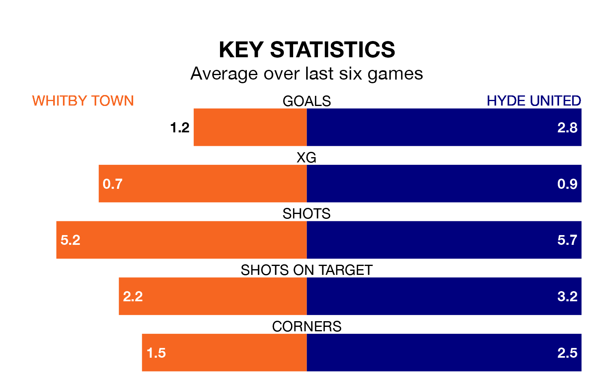

Two of the Northern Premier League's meanest defences go head-to-head at the Turnbull Ground on Saturday, when Whitby Town host Hyde United.
No teams have conceded fewer goals than Whitby to date: the home side have let in just 30 goals in 26 games.
Hyde have conceded 33 goals in 31 games, giving them the fourth tightest back line so far this season.
Hyde are third in the table after 31 games, of which they have won 16 and drawn eight, earning 56 points.
Whitby are eight places behind United in 11th, with 13 wins and six draws putting them on 45 points.
In the last 10 years, Whitby and Hyde have played each other on 11 occasions. Whitby won five of them, Hyde four, and they drew twice.
On average, Whitby scored 1.0 goal and Hyde 1.1 in those matches.
Their last meeting was on November 7, when Whitby won 2-1 away.
Town are in mixed form in the Northern Premier League, with three wins and a draw from their last six games.
With four wins and two draws over that period, the visitors' form is better – they have taken 14 points from 18, compared to the home team's 10.
Whitby's last match was on February 3, a 3-0 win against Basford United.
Hyde drew 1-1 with Stafford Rangers last time out, on February 17.
Updated: 10:08 (UTC), 23/02/24